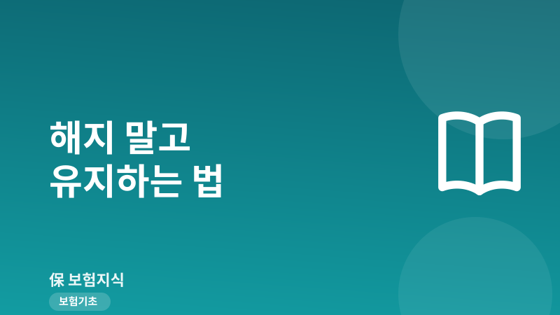
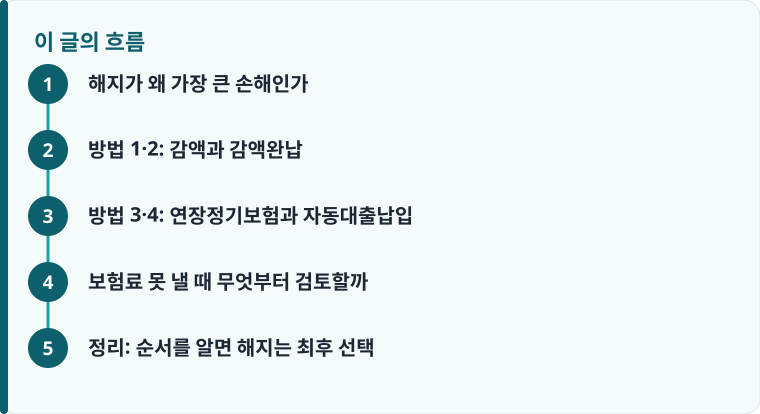

보험료가 밀릴 것 같으면 해지보다 먼저 감액·감액완납·연장정기·자동대출납입·납입유예 중 내 상품에 맞는 방법을 찾는 것이 손해가 적습니다.
해약환급금이 얼마나 쌓였는지, 저축성인지 소멸성인지, 유니버설 기능이 있는지에 따라 쓸 수 있는 제도가 달라집니다.
실효되면 보통 2~3년 안에만 부활할 수 있고, 연체이자와 건강 고지를 다시 요구받으므로 실효 전에 움직여야 합니다.
해지가 왜 가장 큰 손해인가
보험료가 버거울 때 가장 먼저 떠오르는 선택은 해지입니다. 그러나 해지는 두 가지를 동시에 잃습니다. 첫째, 초기 몇 년간은 사업비가 먼저 빠져나가 해약환급금이 낸 보험료를 크게 밑돕니다. 저해지환급형이라면 납입 기간 중 환급금이 표준형의 50% 안팎으로 설계된 경우도 있어, 3~5년 안에 해지하면 원금 손실이 특히 큽니다. 둘째, 가입 당시의 낮은 예정이율과 그때의 건강 상태·나이가 사라집니다. 몇 년 뒤 다시 가입하려면 오른 나이와 그사이 생긴 병력으로 보험료가 오르거나 부담보·거절을 받을 수 있습니다.
그래서 해지는 대안을 모두 검토한 뒤의 최후 수단이어야 합니다. 기존 계약을 접고 새 상품으로 옮기는 것이 정말 이득인지 헷갈린다면 해지 전에 확인할 손해·심사·승환 순서를 먼저 읽어 보길 권합니다. 아래 다섯 가지는 계약을 살려 둔 채 매달 나가는 돈만 줄이거나 잠시 멈추는 제도들입니다.
방법 1·2: 감액과 감액완납
①감액은 보장금액(가입금액)을 줄여 그만큼 앞으로 낼 보험료를 낮추는 방법입니다. 예를 들어 사망보장 1억 원을 5천만 원으로 줄이면 보험료도 대략 절반 수준으로 내려갑니다. 줄인 부분에서 해약환급금 일부가 정산되어 나오기도 합니다. 다만 한 번 줄인 보장은 나중에 원래대로 올리기가 어렵고, 심사가 다시 필요할 수 있어 신중해야 합니다. 여러 특약 중 중복되거나 우선순위가 낮은 담보부터 줄이는 것이 요령입니다.
②감액완납은 지금까지 쌓인 해약환급금을 재원으로 삼아, 앞으로 추가 보험료를 한 푼도 내지 않으면서 보장금액만 줄인 상태로 만기까지 유지하는 방법입니다. 납입을 완전히 끝내되 보장은 살리는 것이라, 소득이 끊긴 상황에 유용합니다. 대신 적립금이 어느 정도 쌓여 있어야 하므로 종신보험 같은 장기·저축성 상품에 주로 적용되고, 순수보장형처럼 환급금이 거의 없는 소멸성 상품에서는 축소되는 보장이 너무 작아 실익이 없을 수 있습니다. 만기환급금 구조가 낯설다면 환급형과 순수보장형의 차이를 함께 보면 이해가 쉽습니다.

방법 3·4: 연장정기보험과 자동대출납입
③연장정기보험은 감액완납과 반대로 보장금액은 원래대로 유지하되 보장기간을 짧게 바꾸는 방법입니다. 쌓인 해약환급금을 일시납 보험료로 전환해, 종신보장을 예컨대 70세나 80세까지의 정기보험으로 돌려 그 기간 동안 같은 금액을 보장받습니다. 큰 사망보장이 당장 더 중요하고 평생 보장은 포기해도 되는 경우에 맞습니다. 갱신형·비갱신형처럼 보장 구조가 왜 바뀌는지 감을 잡으려면 갱신형과 비갱신형의 차이도 참고가 됩니다.
④보험료 자동대출납입(APL)은 해약환급금 범위 안에서 매달 보험료를 자동으로 대출받아 대신 내는 기능입니다. 계약은 그대로 유지되므로 실직·병가처럼 일시적으로 몇 달만 자금이 막혔을 때 가장 간편합니다. 다만 대출이므로 예정이율에 가산금리를 더한 이자가 붙고, 대출 원리금이 해약환급금을 모두 소진하면 그 시점에 계약이 실효됩니다. 어디까지나 단기 다리 역할이라, 소득이 회복되면 대출금을 갚아 환급금을 복원해 두는 것이 안전합니다.
작성·검수 기준
이 글은 특정 보험상품의 유지나 해지를 권유하기 위한 것이 아니라, 보험료가 부담될 때 계약을 살릴 수 있는 일반적인 제도를 설명하기 위해 작성했습니다. 감액·감액완납·연장정기보험·자동대출납입·납입유예의 가능 여부와 조건은 상품 종류, 적립금 규모, 가입 시점의 약관에 따라 크게 달라집니다.
실제 적용 가능한 방법과 예상 환급금·보장 변화는 본인 증권의 약관과 상품설명서, 콜센터 안내로 확인하고, 계약 전반을 점검하려면 보험 리모델링 안내를 함께 참고하는 것이 정확합니다.
보험료 못 낼 때 무엇부터 검토할까
⑤납입유예·납입중지는 유니버설 기능이 있는 상품에서 쓸 수 있습니다. 의무납입기간(흔히 2년)을 채운 뒤에는, 그동안 쌓인 적립금에서 위험보험료와 사업비가 빠져나가는 동안 일정 기간 보험료를 내지 않아도 계약이 유지됩니다. 다만 적립금이 바닥나면 곧바로 실효되므로 유예는 무한정이 아니며, 나중에 적립금을 채워 넣어야 보장이 정상으로 돌아옵니다. 만약 이미 연체가 시작됐다면, 보통 2회 이상 밀리면 계약이 실효되고, 실효 뒤에는 통상 2~3년 안에만 부활을 청약할 수 있습니다. 부활하려면 밀린 보험료에 연체이자를 더해 내야 하고, 건강 상태를 다시 알리는 고지의무가 되살아나며 면책·감액기간이 다시 시작될 수 있다는 점을 기억해야 합니다. 그래서 검토는 실효 전에 다음 순서로 하는 것이 좋습니다.
- 내 계약이 저축성인지 소멸성인지, 해약환급금과 적립금이 얼마인지 증권으로 확인합니다.
- 몇 달짜리 단기 자금난이면 자동대출납입이나 유니버설 납입유예로 시간을 법니다.
- 장기적으로 부담을 낮춰야 하면 우선순위 낮은 담보부터 감액합니다.
- 더는 보험료를 못 내되 보장은 살려야 하면 감액완납 또는 연장정기보험을 비교합니다.
- 어떤 방법도 실익이 없을 때에 한해, 손해를 계산한 뒤 해지를 마지막으로 검토합니다.
정리: 순서를 알면 해지는 최후 선택
보험료가 부담될 때 곧바로 해지하면 원금과 그동안의 건강 나이를 함께 잃습니다. 단기 자금난이면 자동대출납입과 납입유예로 버티고, 부담을 구조적으로 낮춰야 하면 감액을, 납입을 멈추되 보장을 살리려면 감액완납이나 연장정기보험을 쓰는 식으로 상황에 맞는 제도를 고르면 됩니다. 각 방법의 적용 여부를 미리 가늠하려면 보험 리모델링 체크로 담보 우선순위를 정리해 두면 좋고, 제도 자체가 낯설다면 보험의 기본 구조부터 짚어 보길 권합니다.
다른 보험 정보 글이 궁금하다면 보험지식 블로그에서 이어 읽어 보세요. 가입 전에는 반드시 약관과 상품설명서를 확인하는 것이 가장 안전한 방법입니다.